About this game:
The Locker is a mixed-reality installation game in which you explore physical artifacts with your hands and reveal memories using a bewitched magnifying glass.
You receive a note from Jade, a student at your high school who has recently gone missing, and decide to do some snooping. Inside her locker, you find diary entries to read, physical puzzles to solve, artifacts to investigate, and memories to reveal with your magnifying glass.
Combining physical exploration with puzzle and film, the Locker will engage quite a few of your senses for a memorable experience.
 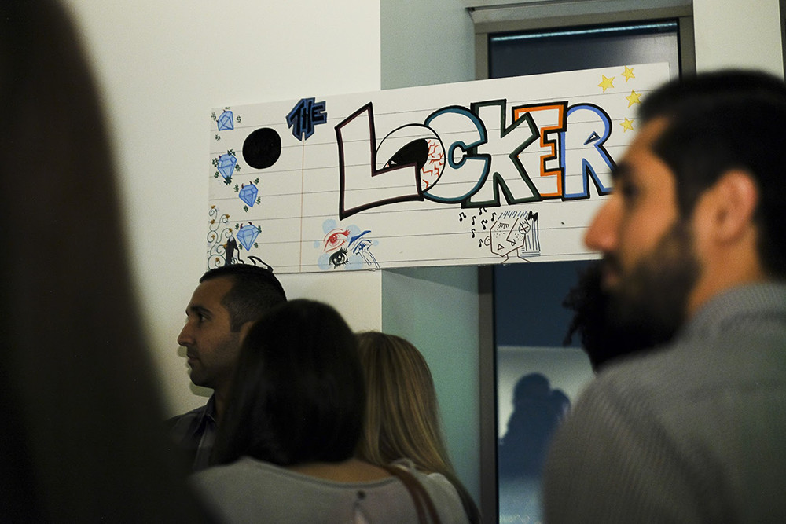
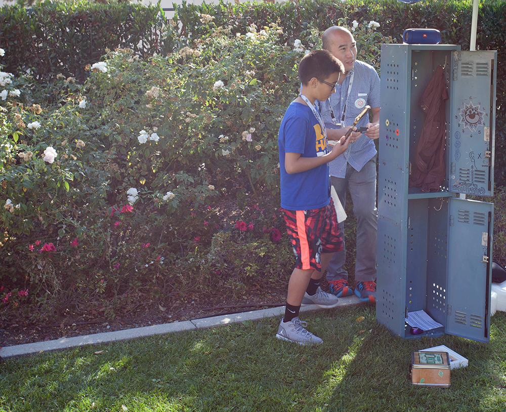
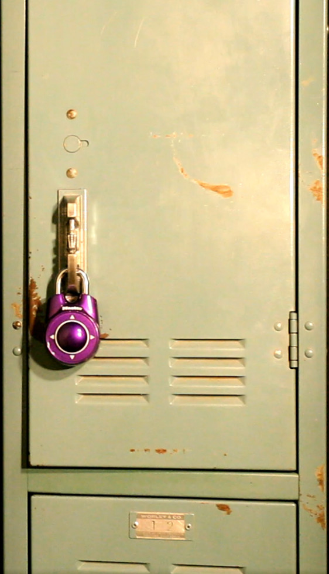
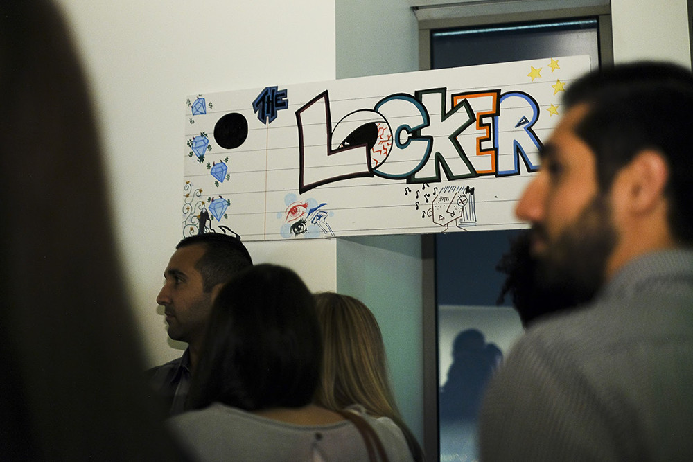
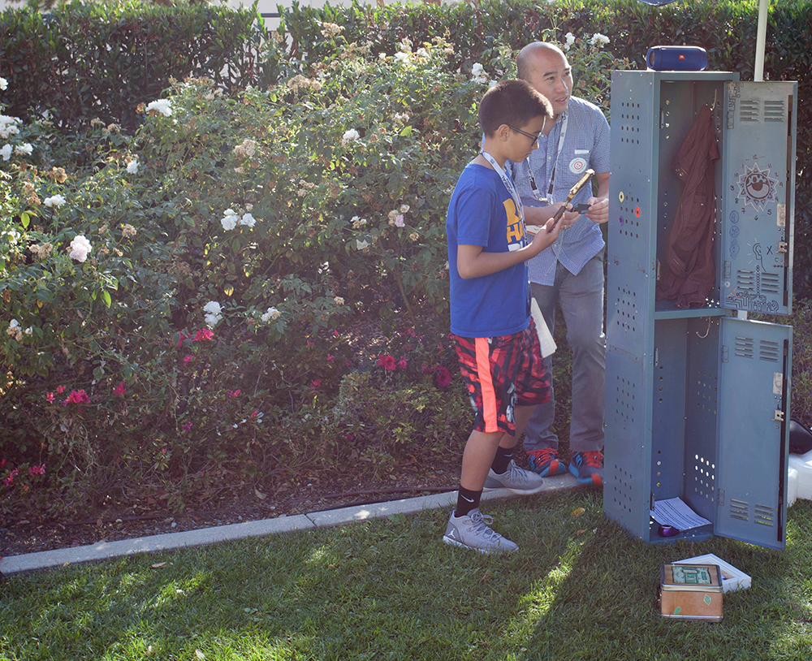
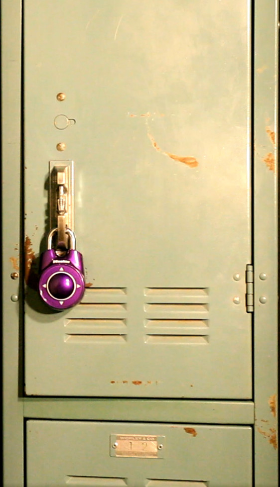
 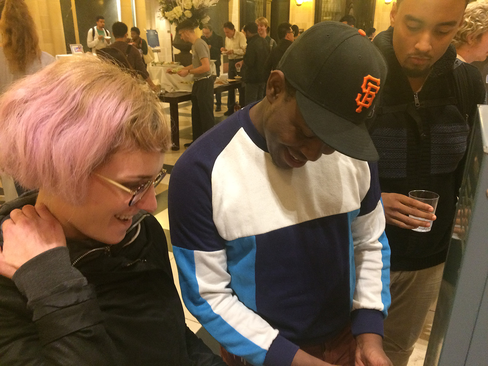
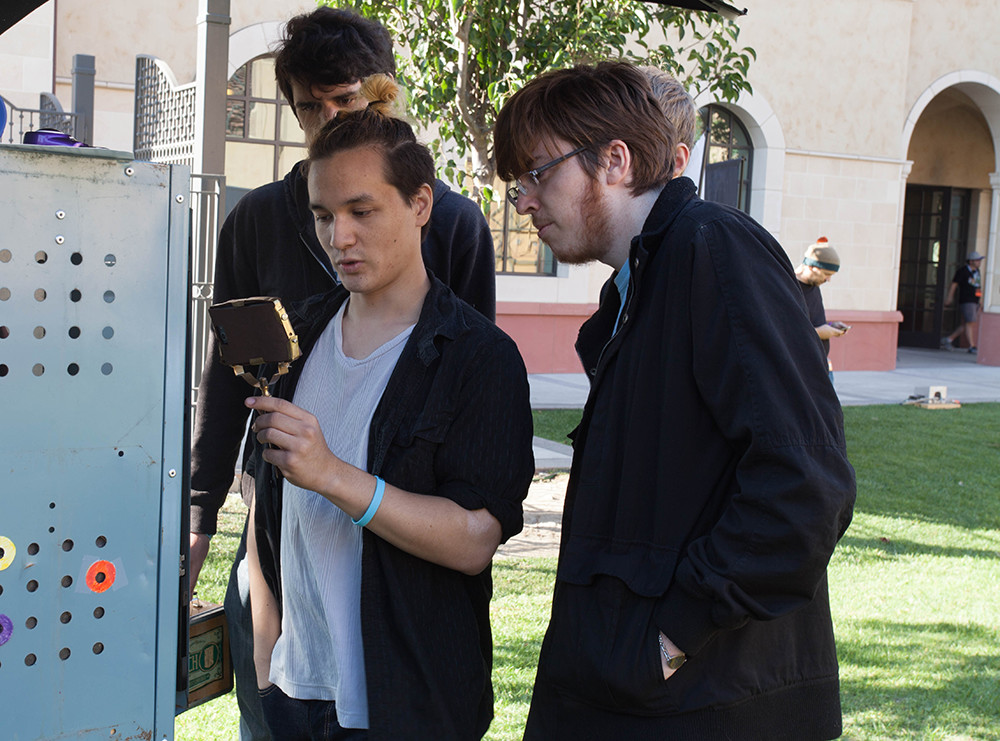
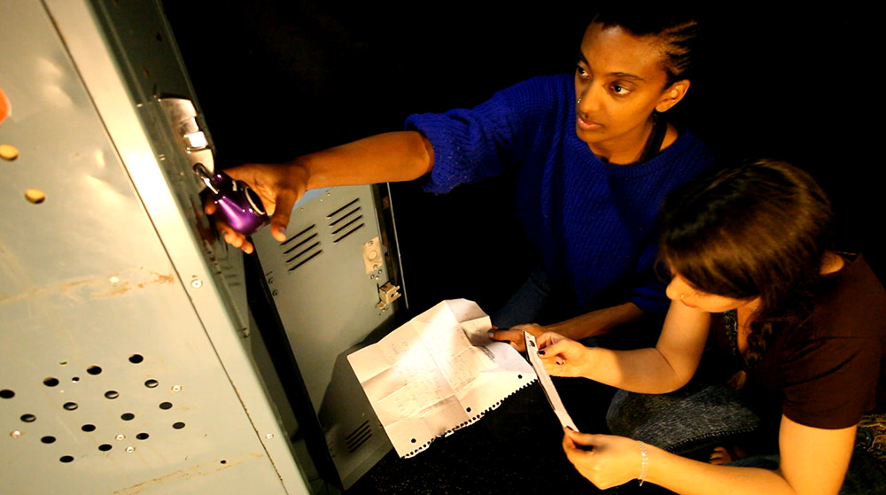
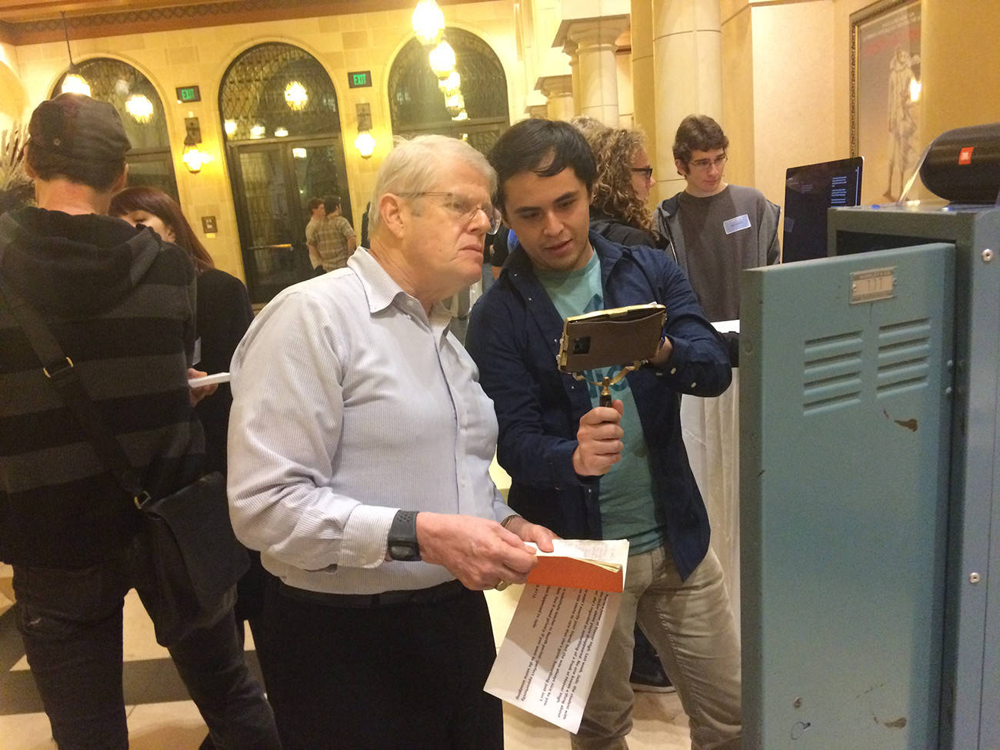
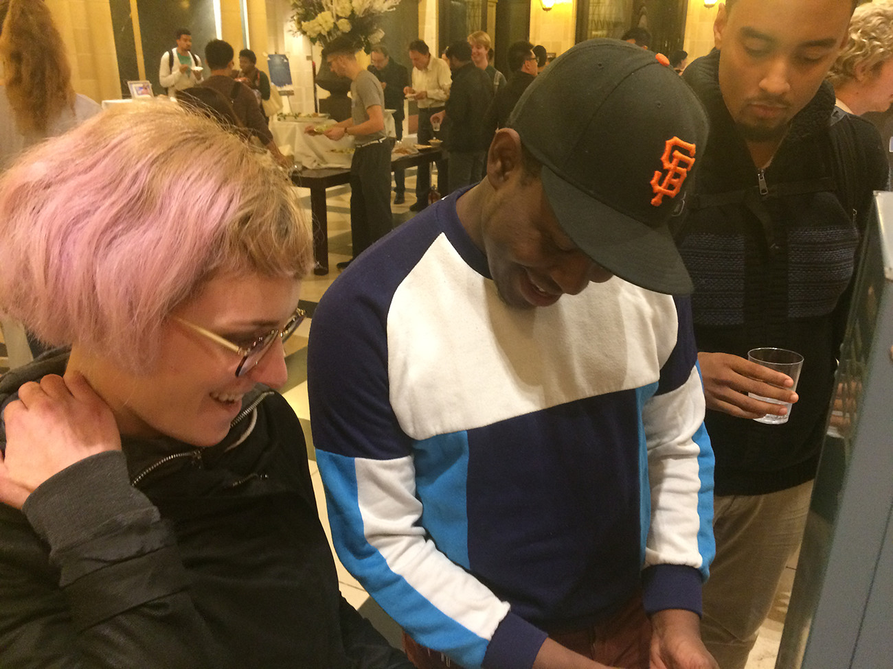
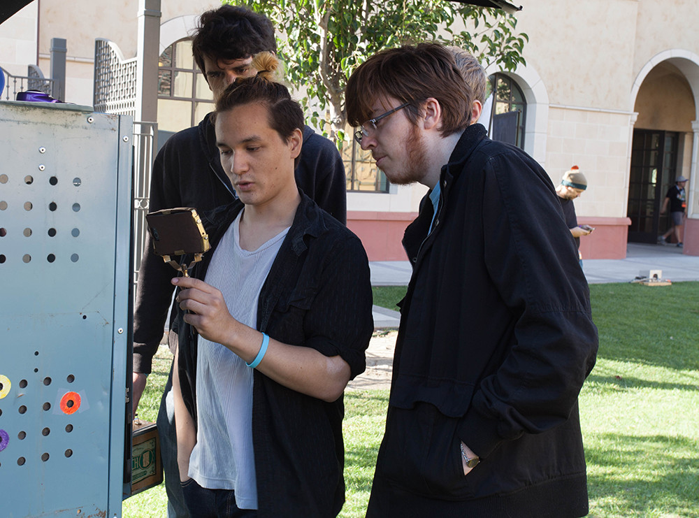
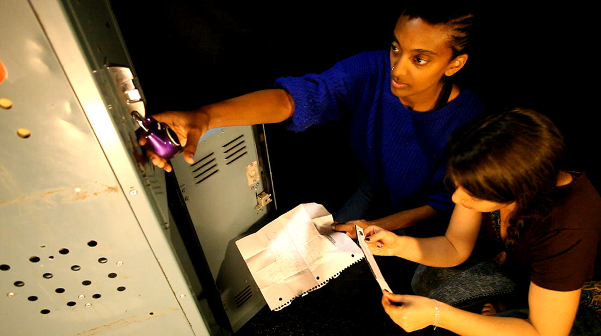
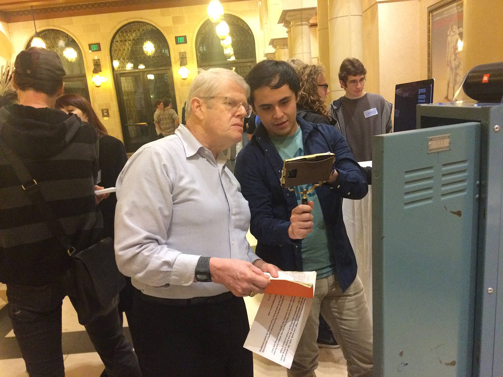